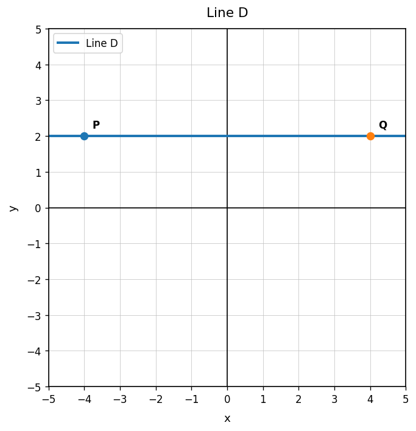
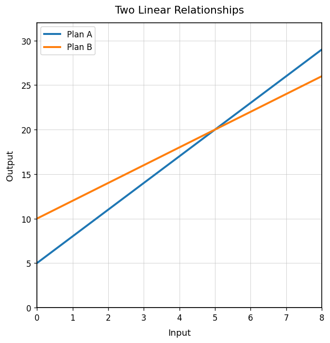
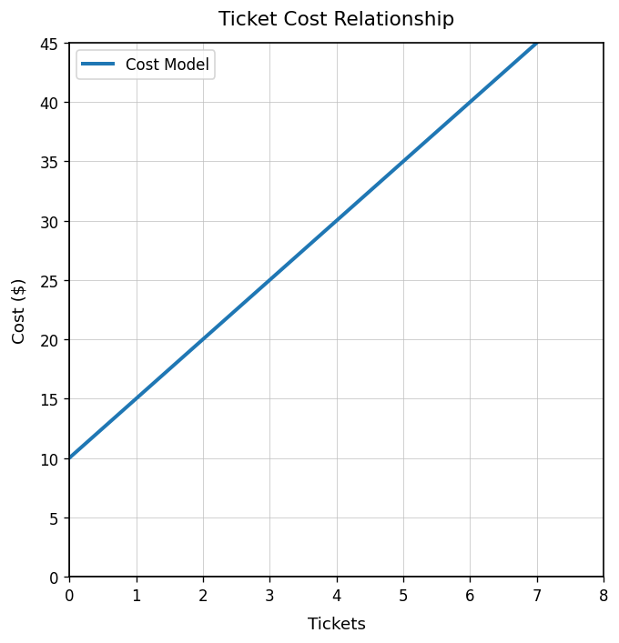
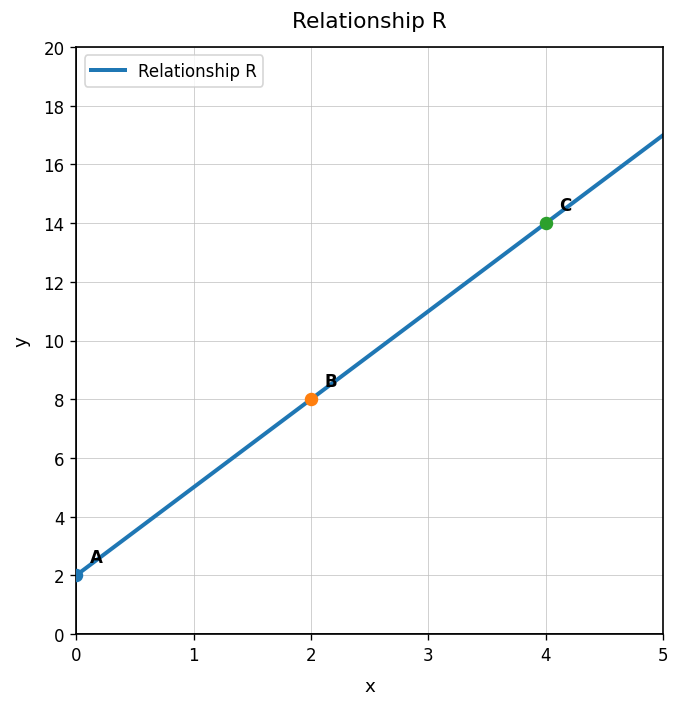

Use Line D. What does the graph show about the rate of change?

Find the rate of change and decide whether it is constant.
| $x$ | 0 | 2 | 4 | 6 |
|---|---|---|---|---|
| $y$ | 10 | 16 | 22 | 28 |
Use the two linear relationships. Compare their rates of change and explain what is the same or different.

A student says, “The slope between $(2,14)$ and $(5,8)$ is positive because both coordinates are positive.” Critique the statement, find the slope, and rewrite a correct explanation.
Identify the representation type: The total cost is $\$12$ plus $\$3$ per mile.
For the equation $y=7x+2$, what number is added after multiplying by 7?
Use the table. Name two ordered pairs.
| $x$ | 0 | 1 | 2 | 3 |
|---|---|---|---|---|
| $y$ | 8 | 10 | 12 | 14 |
Use the graph. What is the output when the input is $0$?

Which cards could describe the same relationship? Explain.
Use the graph to make a table with at least three ordered pairs.

A student claims that a context and an equation match because they use the same numbers. Explain why matching numbers is not enough.
Create an equation and a context that do not quite match. Then revise the context or equation so they describe the same relationship.
Identify the $x$-coordinate and $y$-coordinate of $(-2,-7)$.
A graph has a point $(8,20)$ where $x$ is weeks and $y$ is dollars saved. Interpret the point.
A student plots $(-3,4)$ by moving right 3 and up 4. Identify and correct the error.
Create four points: one in Quadrant I, one in Quadrant II, one on the $x$-axis, and one on the $y$-axis. Explain how you know each point fits.